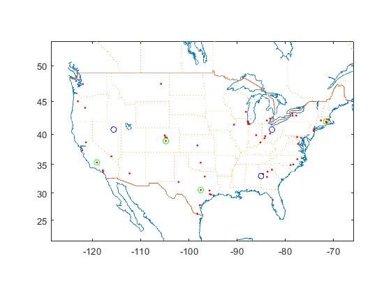

Exam 1
Contents
Kimia Vahdat #200262784
Question 1
Input Data
cust.zip=[72118, 55372,15010,88012,87301,73099];
cust.f=[1600,1600,2200,1200,2600,1500];
uwt=175;
ucu= 38.2;
s=uwt/ucu
supp.city={'Richmond','Canton','Malden','Tyler'};
supp.st={'CA','OH','MA','TX'};
supp.f=[4,3,1,4];
rwt=[8,14,4,29]; rcu=[2.7,1.3,2.7,3.6];
rs=rwt./rcu
city2lonlat = @(city,st) ...
uscity('XY',mand(city,uscity('Name'),st,uscity('ST')));
supp.XY=city2lonlat(supp.city,supp.st);
cust.XY= uszip5('XY',mand(cust.zip,uszip5('Code5')));
ppiTL=141.9;
CF= cust.f .* (uwt/2000)
SF=(supp.f .* rwt./2000)*sum(cust.f)
s =
4.5812
rs =
2.9630 10.7692 1.4815 8.0556
CF =
140.0000 140.0000 192.5000 105.0000 227.5000 131.2500
SF =
171.2000 224.7000 21.4000 620.6000
Calculating
tr= struct('r',2*(ppiTL/102.7),'Kwt',25,'Kcu',2750);
shS=vec2struct('f',SF,'s',rwt./rcu);
sh = aggshmt(shS);
sh = [shS vec2struct(sh,'f',CF)];
sdisp(sh)
qmax = maxpayld(sh,tr)
n = ([sh.f]./qmax);
w = n.*tr.r;
[DCtc,Tc] = minisumloc([supp.XY; cust.XY],w,'mi')
lonlat2city(DCtc)
sh: f s
--:---------------
1: 171.20 2.96
2: 224.70 10.77
3: 21.40 1.48
4: 620.60 8.06
5: 140.00 6.10
6: 140.00 6.10
7: 192.50 6.10
8: 105.00 6.10
9: 227.50 6.10
10: 131.25 6.10
qmax =
Columns 1 through 7
4.0741 14.8077 2.0370 11.0764 8.3884 8.3884 8.3884
Columns 8 through 10
8.3884 8.3884 8.3884
DCtc =
-97.6446 35.5006
Tc =
4.5798e+05
DCtc is 7.72 mi W of Oklahoma City, OK
Question 2
Reading data
clear all
close all
fn = 'Exam1DataS19.xlsx';
inC = table2struct(readtable(fn,'Sheet','Customers'));
inP = table2struct(readtable(fn,'Sheet','Plants'));
Geolocate
city2lonlat = @(city,st) ...
uscity('XY',mand(city,uscity('Name'),st,uscity('ST')));
for i = 1:length(inP)
XYP(i,:) = city2lonlat(inP(i).City,inP(i).State);
end
XYC = uszip5('XY',mand([inC.Zip],uszip5('Code5')));
a=uszip5('LandArea',mand([inC.Zip],uszip5('Code5')));
makemap(XYC)
pplot(XYC,'r.')
hold on
pplot(XYP,'bo')
hold off
f = [inC.Demand];
cap=[inP.Capacity];
Allocated Plant demand to customers
D = dists(XYP,XYC,'mi')*1.2;
length([inC.Zip]) == length(unique([inC.Zip]))
f = [inC.Demand];
F = sparse(argmin(D,1),1:length(inC),f);
increment= (sum(F,2)-cap').* ([inP.DistCost]' ./ cap')
r = (sum([inP.DistCost])+sum(increment))/sum(sum(F.*D))
D = dists([XYP; XYC],XYC,'mi')*1.2;
C = r*(f(:)'.*D);
ans =
logical
1
increment =
1.0e+06 *
4.8584
0.0193
5.2210
r =
0.4675
fix Cost
x = sum(F,2);
increment= (sum(F,2)-cap').* ([inP.ProdCost]' ./ cap')
y = ([inP.ProdCost]+increment')';
yest = @(x,p) p(1) + p(2)*x;
fh = @(p) sum((y - yest(x,p)).^2);
ab = fminsearch(fh,[0 1])
k = ab(1), c_prod = ab(2)
plot(x,y,'r.')
hold on, fplot(@(x) yest(x,ab),[0 max(x)],'k-'), hold off
increment =
1.0e+06 *
1.6988
0.0138
2.4950
ab =
1.0e+06 *
2.2564 0.0001
k =
2.2564e+06
c_prod =
69.0391
Current TLC
yorig = 1:length(inP)
nNForig = length(yorig)
distCost_orig = sum([inP.DistCost])
fixedCost_orig = k * length(inP)
TLCorig = fixedCost_orig + distCost_orig
yorig =
1 2 3
nNForig =
3
distCost_orig =
23431463
fixedCost_orig =
6.7693e+06
TLCorig =
3.0201e+07
Adding a new NF
clear mp
K=cap;
mp = Milp('CFL')
mp.Model;
[n m] = size(C)
kn = iff(isscalar(k),repmat(k,1,n),k(:)');
mp.addobj('min',kn,C)
for j = 1:m
mp.addcstr(0,{':',j},'=',1)
end
for i = 1:3
mp.addcstr({K(i),{i}},'>=',{f',{i,':'}})
end
for i=4:n
mp.addcstr({m,{i}},'>=',{i,':'})
end
mp.addcstr({1,{1}},0,'=',1)
mp.addcstr({1,{2}},0,'=',1)
mp.addcstr({1,{3}},0,'=',1)
mp.addub(1,1)
mp.addctype('B','C')
mp.Model
mp =
Milp with properties:
Model: [1×1 struct]
n =
65
m =
62
ans =
struct with fields:
name: 'CFL'
sense: 'minimize'
obj: [1×4095 double]
lb: [1×4095 double]
ub: [1×4095 double]
ctype: 'BBBBBBBBBBBBBBBBBBBBBBBBBBBBBBBBBBBBBBBBBBBBBBBBBBBBBBBBBBBBBBBBBCCCCCCCCCCCCCCCCCCCCCCCCCCCCCCCCCCCCCCCCCCCCCCCCCCCCCCCCCCCCCCCCCCCCCCCCCCCCCCCCCCCCCCCCCCCCCCCCCCCCCCCCCCCCCCCCCCCCCCCCCCCCCCCCCCCCCCCCCCCCCCCCCCCCCCCCCCCCCCCCCCCCCCCCCCCCCCCCCCCCCCCCCCCCCCCCCCCCCCCCCCCCCCCCCCCCCCCCCCCCCCCCCCCCCCCCCCCCCCCCCCCCCCCCCCCCCCCCCCCCCCCCCCCCCCCCCCCCCCCCCCCCCCCCCCCCCCCCCCCCCCCCCCCCCCCCCCCCCCCCCCCCCCCCCCCCCCCCCCCCCCCCCCCCCCCCCCCCCCCCCCCCCCCCCCCCCCCCCCCCCCCCCCCCCCCCCCCCCCCCCCCCCCCCCCCCCCCCCCCCCCCCCCCCCCCCCCCCCCCCCCCCCCCCCCCCCCCCCCCCCCCCCCCCCCCCCCCCCCCCCCCCCCCCCCCCCCCCCCCCCCCCCCCCCCCCCCCCCCCCCCCCCCCCCCCCCCCCCCCCCCCCCCCCCCCCCCCCCCCCCCCCCCCCCCCCCCCCCCCCCCCCCCCCCCCCCCCCCCCCCCCCCCCCCCCCCCCCCCCCCCCCCCCCCCCCCCCCCCCCCCCCCCCCCCCCCCCCCCCCCCCCCCCCCCCCCCCCCCCCCCCCCCCCCCCCCCCCCCCCCCCCCCCCCCCCCCCCCCCCCCCCCCCCCCCCCCCCCCCCCCCCCCCCCCCCCCCCCCCCCCCCCCCCCCCCCCCCCCCCCCCCCCCCCCCCCCCCCCCCCCCCCCCCCCCCCCCCCCCCCCCCCCCCCCCCCCCCCCCCCCCCCCCCCCCCCCCCCCCCCCCCCCCCCCCCCCCCCCCCCCCCCCCCCCCCCCCCCCCCCCCCCCCCCCCCCCCCCCCCCCCCCCCCCCCCCCCCCCCCCCCCCCCCCCCCCCCCCCCCCCCCCCCCCCCCCCCCCCCCCCCCCCCCCCCCCCCCCCCCCCCCCCCCCCCCCCCCCCCCCCCCCCCCCCCCCCCCCCCCCCCCCCCCCCCCCCCCCCCCCCCCCCCCCCCCCCCCCCCCCCCCCCCCCCCCCCCCCCCCCCCCCCCCCCCCCCCCCCCCCCCCCCCCCCCCCCCCCCCCCCCCCCCCCCCCCCCCCCCCCCCCCCCCCCCCCCCCCCCCCCCCCCCCCCCCCCCCCCCCCCCCCCCCCCCCCCCCCCCCCCCCCCCCCCCCCCCCCCCCCCCCCCCCCCCCCCCCCCCCCCCCCCCCCCCCCCCCCCCCCCCCCCCCCCCCCCCCCCCCCCCCCCCCCCCCCCCCCCCCCCCCCCCCCCCCCCCCCCCCCCCCCCCCCCCCCCCCCCCCCCCCCCCCCCCCCCCCCCCCCCCCCCCCCCCCCCCCCCCCCCCCCCCCCCCCCCCCCCCCCCCCCCCCCCCCCCCCCCCCCCCCCCCCCCCCCCCCCCCCCCCCCCCCCCCCCCCCCCCCCCCCCCCCCCCCCCCCCCCCCCCCCCCCCCCCCCCCCCCCCCCCCCCCCCCCCCCCCCCCCCCCCCCCCCCCCCCCCCCCCCCCCCCCCCCCCCCCCCCCCCCCCCCCCCCCCCCCCCCCCCCCCCCCCCCCCCCCCCCCCCCCCCCCCCCCCCCCCCCCCCCCCCCCCCCCCCCCCCCCCCCCCCCCCCCCCCCCCCCCCCCCCCCCCCCCCCCCCCCCCCCCCCCCCCCCCCCCCCCCCCCCCCCCCCCCCCCCCCCCCCCCCCCCCCCCCCCCCCCCCCCCCCCCCCCCCCCCCCCCCCCCCCCCCCCCCCCCCCCCCCCCCCCCCCCCCCCCCCCCCCCCCCCCCCCCCCCCCCCCCCCCCCCCCCCCCCCCCCCCCCCCCCCCCCCCCCCCCCCCCCCCCCCCCCCCCCCCCCCCCCCCCCCCCCCCCCCCCCCCCCCCCCCCCCCCCCCCCCCCCCCCCCCCCCCCCCCCCCCCCCCCCCCCCCCCCCCCCCCCCCCCCCCCCCCCCCCCCCCCCCCCCCCCCCCCCCCCCCCCCCCCCCCCCCCCCCCCCCCCCCCCCCCCCCCCCCCCCCCCCCCCCCCCCCCCCCCCCCCCCCCCCCCCCCCCCCCCCCCCCCCCCCCCCCCCCCCCCCCCCCCCCCCCCCCCCCCCCCCCCCCCCCCCCCCCCCCCCCCCCCCCCCCCCCCCCCCCCCCCCCCCCCCCCCCCCCCCCCCCCCCCCCCCCCCCCCCCCCCCCCCCCCCCCCCCCCCCCCCCCCCCCCCCCCCCCCCCCCCCCCCCCCCCCCCCCCCCCCCCCCCCCCCCCCCCCCCCCCCCCCCCCCCCCCCCCCCCCCCCCCCCCCCCCCCCCCCCCCCCCCCCCCCCCCCCCCCCCCCCCCCCCCCCCCCCCCCCCCCCCCCCCCCCCCCCCCCCCCCCCCCCCCCCCCCCCCCCCCCCCCCCCCCCCCCCCCCCCCCCCCCCCCCCCCCCCCCCCCCCCCCCCCCCCCCCCCCCCCCCCCCCCCCCCCCCCCCCCCCCCCCCCCCCCCCCCCCCCCCCCCCCCCCCCCCCCCCCCCCCCCCCCCCCCCCCCCCCCCCCCCCCCCCCCCCCCCCCCCCCCCCCCCCCCCCCCCCCCCCCCCCCCCCCCCCCCCCCCCCCCCCCCCCCCCCCCCCCCCCCCCCCCCCCCCCCCCCCCCCCCCCCCCCCCCCCCCCCCCCCCCCCCCCCCCCCCCCCCCCCCCCCCCCCCCCCCCCCCCCCCCCCCCCCCCCCCCCCCCCCCCCCCCCCCCCCCCCCCCCCCCCCCCCCCCCCCCCCCCCCCCCCCCCCCCCCCCCCCCCCCCCCCCCCCCCCCCCCCCCCCCCCCCCCCCCCCCCCCCCCCCCCCCCCCCCCCCCCCCCCCCCCCCCCCCCCCCCCCCCCCCCCCCCCCCCCCCCCCCCCCCCCCCCCCCCCCCCCCCCCCCCCCCCCCCCCCCCCCCCCCCCCCCCCCCCCCCCCCCCCCCCCCCCCCCCCCCCCCCCCCCCCCCCCCCCCCCCCCCCCCCCCCCCCCCCCCCCCCCCCCCCCCCCCCCCCCCCCCCCCCCCCCCCCCCCCCCCCCCCCCCCCCCCCCCCCCCCCCCCCCCCCCCCCCCCCCCCCCCCCCCCCCCCCCCCCCCCCCCCCCCCCCCCCCCCCCCCCCCCCCCCCCCCCCCCCCCCCCCCCCCCCCCCCCCCCCCCCCCCCCCCCCCCCCCCCCCCCCCCCCCCCCCCCCCCCCCCCCCCCCCCCCCCCCCCCCCCCCCCCCCCCCCCCCCCCCCCCCCCCCCCCCCCCCCCCCCCCCCCCCCCCCCCCCCCCCCCCCCCCCCCCCCCCCCCCCCCCCCCCCCCCCCCCCCCCCCCCCCCCCCCCCCCCCCCCCCCCCCCCCCCCCCCCCCCCCCCCCCCCCCCCCCCCCCCCCCCCCCCCCCCCCCCCCCCCCCCCCCCCCCCCCCCCCCCCCCCCCCCCCCCCCCCCCCCCCCCCCCCCCCCCCCCCCCCCCCCCCCCCCCCCCCCCCCCCCCCCCCCCCCCCCCCCCCCCCCCCCCCCCCCCCCCCCCCCCCCCCCCCCCCCCCCCCCCCCCCCCCCCCCCCCCCCCCCCCCCCCCCCCCCCCCCCCCCCCCCCCCCCCCCCCCCCCCCCCCCCCCCCCCCCCCCCCCCCCCCCCCCCCCCCCCCCCCCCCCCCCCCCCCCCCCCCCCCCCCCCCCCCCCCCCCCCCCCCCCCCCCCCCCCCCCCCCCCCCCCCCCCCCCCCCCCCCCCCCCCCCCCCCCCCCCCCCCCCCCCCCCCCCCCCCCCCCCCCCCCCCCCCCCCCCCCCCCCCCCCCCCCCCCCCCCCCCCCCCCCCCCCCCCCCCCCCCCCCCCCCCCCCCCCCCCCCCCCCCCCCCCCCCCCCCCCCCCCCCCCCCCCCCCCCCCCCCCCCCCCCCCCCCCCCCCCCCCCCCCCCCCCCCCCCCCCCCCCCCCCCCCCCCCCCCCCCCCCCCCCCCCCCCCCCCCCCCCCCCCCCCCCCCCCCCCCCCCCCCCCCCCCCCCCCCCCCCCCCCCCCCCCCCCCCCCCCCC'
A: [130×4095 double]
lhs: [130×1 double]
rhs: [130×1 double]
Solving with Gurobi
clear model params
model = mp.milp2gb;
params.outputflag = 1;
result = gurobi(model,params);
x = result.x;
TC = result.objval;
Optimize a model with 130 rows, 4095 columns and 8128 nonzeros
Variable types: 4030 continuous, 65 integer (65 binary)
Coefficient statistics:
Matrix range [1e+00, 4e+04]
Objective range [1e-08, 1e+07]
Bounds range [1e+00, 1e+00]
RHS range [1e+00, 1e+00]
Found heuristic solution: objective 1.651550e+08
Presolve removed 3 rows and 3 columns
Presolve time: 0.01s
Presolved: 127 rows, 4092 columns, 8122 nonzeros
Variable types: 4030 continuous, 62 integer (62 binary)
Root relaxation: objective 8.976316e+06, 139 iterations, 0.00 seconds
Nodes | Current Node | Objective Bounds | Work
Expl Unexpl | Obj Depth IntInf | Incumbent BestBd Gap | It/Node Time
0 0 8976315.56 0 60 1.6515e+08 8976315.56 94.6% - 0s
H 0 0 1.421781e+08 8976315.56 93.7% - 0s
H 0 0 6.713788e+07 8976315.56 86.6% - 0s
H 0 0 4.004788e+07 8976315.56 77.6% - 0s
0 0 1.4646e+07 0 43 4.0048e+07 1.4646e+07 63.4% - 0s
0 0 1.7523e+07 0 35 4.0048e+07 1.7523e+07 56.2% - 0s
0 0 1.9831e+07 0 32 4.0048e+07 1.9831e+07 50.5% - 0s
0 0 2.3342e+07 0 31 4.0048e+07 2.3342e+07 41.7% - 0s
H 0 0 3.709438e+07 2.3342e+07 37.1% - 0s
H 0 0 3.554986e+07 2.3342e+07 34.3% - 0s
H 0 0 3.545842e+07 2.3342e+07 34.2% - 0s
H 0 0 3.354171e+07 2.3342e+07 30.4% - 0s
H 0 0 3.136927e+07 2.3342e+07 25.6% - 0s
0 0 2.5226e+07 0 19 3.1369e+07 2.5226e+07 19.6% - 0s
0 0 2.5233e+07 0 19 3.1369e+07 2.5233e+07 19.6% - 0s
0 0 2.7257e+07 0 15 3.1369e+07 2.7257e+07 13.1% - 0s
0 0 2.7754e+07 0 13 3.1369e+07 2.7754e+07 11.5% - 0s
H 0 0 3.078651e+07 2.7754e+07 9.85% - 0s
0 0 2.8636e+07 0 9 3.0787e+07 2.8636e+07 6.99% - 0s
H 0 0 3.074964e+07 2.8636e+07 6.87% - 0s
0 0 2.8655e+07 0 9 3.0750e+07 2.8655e+07 6.81% - 0s
0 0 2.8786e+07 0 8 3.0750e+07 2.8786e+07 6.39% - 0s
0 0 2.8875e+07 0 4 3.0750e+07 2.8875e+07 6.10% - 0s
H 0 0 3.000317e+07 2.8875e+07 3.76% - 0s
0 0 2.8877e+07 0 4 3.0003e+07 2.8877e+07 3.75% - 0s
0 0 2.8902e+07 0 2 3.0003e+07 2.8902e+07 3.67% - 0s
H 0 0 2.992339e+07 2.8902e+07 3.41% - 0s
0 0 2.8904e+07 0 4 2.9923e+07 2.8904e+07 3.41% - 0s
0 0 2.8965e+07 0 2 2.9923e+07 2.8965e+07 3.20% - 0s
0 0 2.8968e+07 0 2 2.9923e+07 2.8968e+07 3.19% - 0s
0 0 2.8970e+07 0 2 2.9923e+07 2.8970e+07 3.19% - 0s
H 0 0 2.969705e+07 2.8970e+07 2.45% - 0s
H 0 0 2.903303e+07 2.8970e+07 0.22% - 0s
0 1 2.8980e+07 0 1 2.9033e+07 2.8980e+07 0.18% - 0s
* 16 0 16 2.903179e+07 2.9028e+07 0.01% 3.7 0s
Cutting planes:
Implied bound: 373
Explored 18 nodes (612 simplex iterations) in 0.25 seconds
Thread count was 8 (of 8 available processors)
Solution count 10: 2.90318e+07 2.9033e+07 2.9697e+07 ... 3.54584e+07
Optimal solution found (tolerance 1.00e-04)
Best objective 2.903178774534e+07, best bound 2.903178774534e+07, gap 0.0000%
Display solution
x = mp.namesolution(x)
TC
TCcalc = sum(kn.*x.kn) + full(sum(sum(C.*x.C)))
idxNF = find(round(x.kn))
nNF = sum(x.kn)
vdisp('TCcalc,TLCorig,nNF,nNForig ')
sat_demand = sum(sum(f .* x.C));
disp(['Total demand satisfied is: ' num2str(sat_demand) ' Out of total demand ' num2str(sum(f))])
aa=x.kn';
XY=aa(4:end).*XYC;
makemap(XYC)
pplot(XYC,'r.')
hold on
pplot(XYP,'bo')
pplot(XY,'go')
hold off
x =
struct with fields:
kn: [1×65 double]
C: [65×62 double]
TC =
2.9032e+07
TCcalc =
2.9032e+07
idxNF =
1 2 3 16 28 47 55
nNF =
7
: TCcalc TLCorig nNF nNForig
-:--------------------------------------------
1: 29,031,787.75 30,200,735.25 7 3
Total demand satisfied is: 137919 Out of total demand 137919

Question 3
Original problem
clear all
close all
sh = vec2struct('f',75,'d',625,'s',12,'v',12000,'h',.3,'a',1);
sdisp(sh)
ppiTL = 123.4, ppiLTL = 141.4,
tr.r = 2*(ppiTL/102.7); tr.Kwt = 25; tr.Kcu = 2750;
[TLC,q,isLTL] = minTLC(sh,tr,ppiLTL)
[TLC,TC,IC]=totlogcost(q,transcharge(q,sh,tr,ppiLTL),sh)
tdays = 365.25*q/sh.f
q1wk = 7*sh.f/365.25
[c,isLTL,cTL,cLTL] = transcharge(q1wk,sh,tr,ppiLTL)
[TLC1wk,TC1wk,IC1wk] = totlogcost(q1wk,c,sh)
increase_in_TLC = TLC1wk - TLC
sh: 1
--:-----------
f: 75.00
d: 625.00
s: 12.00
v: 12,000.00
h: 0.30
a: 1.00
ppiTL =
123.4000
ppiLTL =
141.4000
TLC =
4.0275e+04
q =
5.5938
isLTL =
logical
0
TLC =
4.0275e+04
TC =
2.0138e+04
IC =
2.0138e+04
tdays =
27.2418
q1wk =
1.4374
c =
861.6451
isLTL =
logical
1
cTL =
1.5019e+03
cLTL =
861.6451
TLC1wk =
5.0134e+04
TC1wk =
4.4959e+04
IC1wk =
5.1745e+03
increase_in_TLC =
9.8586e+03
First change a=1 to a=0.5 (batch production with constant rate consumption)
clear sh tr
sh = vec2struct('f',75,'d',625,'s',12,'v',12000,'h',.3,'a',0.5);
sdisp(sh)
ppiTL = 123.4, ppiLTL = 141.4,
tr.r = 2*(ppiTL/102.7); tr.Kwt = 25; tr.Kcu = 2750;
[TLCa,qa,isLTL] = minTLC(sh,tr,ppiLTL)
[TLCa,TCa,ICa]=totlogcost(qa,transcharge(qa,sh,tr,ppiLTL),sh)
tdays = 365.25*qa/sh.f
q1wka = 7*sh.f/365.25
[ca,isLTL,cTLa,cLTLa] = transcharge(q1wka,sh,tr,ppiLTL)
[TLC1wka,TC1wka,IC1wka] = totlogcost(q1wka,ca,sh)
increase_in_TLC = TLC1wka - TLCa
vdisp('[TLC;TLCa],[IC;ICa],[TC;TCa]')
vdisp('[TLC1wk;TLC1wka],[IC1wk;IC1wka],[TC1wk;TC1wka]')
sh: 1
--:-----------
f: 75.00
d: 625.00
s: 12.00
v: 12,000.00
h: 0.30
a: 0.50
ppiTL =
123.4000
ppiLTL =
141.4000
TLCa =
2.8479e+04
qa =
7.9108
isLTL =
logical
0
TLCa =
2.8479e+04
TCa =
1.4239e+04
ICa =
1.4239e+04
tdays =
38.5257
q1wka =
1.4374
ca =
861.6451
isLTL =
logical
1
cTLa =
1.5019e+03
cLTLa =
861.6451
TLC1wka =
4.7547e+04
TC1wka =
4.4959e+04
IC1wka =
2.5873e+03
increase_in_TLC =
1.9068e+04
: [TLC;TLCa] [IC;ICa] [TC;TCa]
-:----------------------------------
1: 40,275.34 20,137.67 20,137.67
2: 28,478.97 14,239.48 14,239.48
: [TLC1wk;TLC1wka] [IC1wk;IC1wka] [TC1wk;TC1wka]
-:--------------------------------------------------
1: 50,133.95 5,174.54 44,959.41
2: 47,546.68 2,587.27 44,959.41
Second change tmax=1 week to tmax= 20 days
clear sh tr
sh = vec2struct('f',75,'d',625,'s',12,'v',12000,'h',.3,'a',1);
sdisp(sh)
ppiTL = 123.4, ppiLTL = 141.4,
tr.r = 2*(ppiTL/102.7); tr.Kwt = 25; tr.Kcu = 2750;
[TLCb,qb,isLTL] = minTLC(sh,tr,ppiLTL)
[TLCb,TCb,ICb]=totlogcost(qb,transcharge(qb,sh,tr,ppiLTL),sh)
tdays = 365.25*qb/sh.f
q1wkb = 20*sh.f/365.25
[cb,isLTL,cTLb,cLTLb] = transcharge(q1wkb,sh,tr,ppiLTL)
[TLC1wkb,TC1wkb,IC1wkb] = totlogcost(q1wkb,cb,sh)
increase_in_TLC = TLC1wkb - TLCb
vdisp('[TLC;TLCb],[IC;ICb],[TC;TCb]')
vdisp('[TLC1wk;TLC1wkb],[IC1wk;IC1wkb],[TC1wk;TC1wkb]')
sh: 1
--:-----------
f: 75.00
d: 625.00
s: 12.00
v: 12,000.00
h: 0.30
a: 1.00
ppiTL =
123.4000
ppiLTL =
141.4000
TLCb =
4.0275e+04
qb =
5.5938
isLTL =
logical
0
TLCb =
4.0275e+04
TCb =
2.0138e+04
ICb =
2.0138e+04
tdays =
27.2418
q1wkb =
4.1068
cb =
1.5019e+03
isLTL =
logical
0
cTLb =
1.5019e+03
cLTLb =
Inf
TLC1wkb =
4.2214e+04
TC1wkb =
2.7429e+04
IC1wkb =
1.4784e+04
increase_in_TLC =
1.9384e+03
: [TLC;TLCb] [IC;ICb] [TC;TCb]
-:----------------------------------
1: 40,275.34 20,137.67 20,137.67
2: 40,275.34 20,137.67 20,137.67
: [TLC1wk;TLC1wkb] [IC1wk;IC1wkb] [TC1wk;TC1wkb]
-:--------------------------------------------------
1: 50,133.95 5,174.54 44,959.41
2: 42,213.71 14,784.39 27,429.31
Third change: Product looses 60% of its value in 2 years
clear sh tr
sh = vec2struct('f',75,'d',625,'s',12,'v',12000,'h',0.04+0.06+0.6/2,'a',1);
sdisp(sh)
ppiTL = 123.4, ppiLTL = 141.4,
tr.r = 2*(ppiTL/102.7); tr.Kwt = 25; tr.Kcu = 2750;
[TLCc,qc,isLTL] = minTLC(sh,tr,ppiLTL)
[TLCc,TCc,ICc]=totlogcost(qc,transcharge(qc,sh,tr,ppiLTL),sh)
tdays = 365.25*qc/sh.f
q1wkc = 7*sh.f/365.25
[cc,isLTL,cTLc,cLTLc] = transcharge(q1wkc,sh,tr,ppiLTL)
[TLC1wkc,TC1wkc,IC1wkc] = totlogcost(q1wkc,cc,sh)
increase_in_TLC = TLC1wkc - TLCc
vdisp('[TLC;TLCc],[IC;ICc],[TC;TCc]')
vdisp('[TLC1wk;TLC1wkc],[IC1wk;IC1wkc],[TC1wk;TC1wkc]')
sh: 1
--:-----------
f: 75.00
d: 625.00
s: 12.00
v: 12,000.00
h: 0.40
a: 1.00
ppiTL =
123.4000
ppiLTL =
141.4000
TLCc =
4.6506e+04
qc =
4.8444
isLTL =
logical
0
TLCc =
4.6506e+04
TCc =
2.3253e+04
ICc =
2.3253e+04
tdays =
23.5921
q1wkc =
1.4374
cc =
861.6451
isLTL =
logical
1
cTLc =
1.5019e+03
cLTLc =
861.6451
TLC1wkc =
5.1859e+04
TC1wkc =
4.4959e+04
IC1wkc =
6.8994e+03
increase_in_TLC =
5.3528e+03
: [TLC;TLCc] [IC;ICc] [TC;TCc]
-:----------------------------------
1: 40,275.34 20,137.67 20,137.67
2: 46,505.96 23,252.98 23,252.98
: [TLC1wk;TLC1wkc] [IC1wk;IC1wkc] [TC1wk;TC1wkc]
-:--------------------------------------------------
1: 50,133.95 5,174.54 44,959.41
2: 51,858.80 6,899.38 44,959.41
All Changes together
clear sh tr
sh = vec2struct('f',75,'d',625,'s',12,'v',12000,'h',0.04+0.06+0.6/2,'a',0.5);
sdisp(sh)
ppiTL = 123.4, ppiLTL = 141.4,
tr.r = 2*(ppiTL/102.7); tr.Kwt = 25; tr.Kcu = 2750;
[TLC_All,q_All,isLTL] = minTLC(sh,tr,ppiLTL)
[TLC_All,TC_All,IC_All]=totlogcost(q_All,transcharge(q_All,sh,tr,ppiLTL),sh)
tdays = 365.25*qc/sh.f
q1wk_All = 20*sh.f/365.25
[c_All,isLTL,cTL_All,cLTL_All] = transcharge(q1wk_All,sh,tr,ppiLTL)
[TLC1wk_All,TC1wk_All,IC1wk_All] = totlogcost(q1wk_All,c_All,sh)
increase_in_TLC = TLC1wk_All - TLC_All
vdisp('[TLC;TLC_All],[IC;IC_All],[TC;TC_All]')
vdisp('[TLC1wk;TLC1wk_All],[IC1wk;IC1wk_All],[TC1wk;TC1wk_All]')
sh: 1
--:-----------
f: 75.00
d: 625.00
s: 12.00
v: 12,000.00
h: 0.40
a: 0.50
ppiTL =
123.4000
ppiLTL =
141.4000
TLC_All =
3.2885e+04
q_All =
6.8510
isLTL =
logical
0
TLC_All =
3.2885e+04
TC_All =
1.6442e+04
IC_All =
1.6442e+04
tdays =
23.5921
q1wk_All =
4.1068
c_All =
1.5019e+03
isLTL =
logical
0
cTL_All =
1.5019e+03
cLTL_All =
Inf
TLC1wk_All =
3.7286e+04
TC1wk_All =
2.7429e+04
IC1wk_All =
9.8563e+03
increase_in_TLC =
4.4009e+03
: [TLC;TLC_All] [IC;IC_All] [TC;TC_All]
-:-----------------------------------------
1: 40,275.34 20,137.67 20,137.67
2: 32,884.68 16,442.34 16,442.34
: [TLC1wk;TLC1wk_All] [IC1wk;IC1wk_All] [TC1wk;TC1wk_All]
-:-----------------------------------------------------------
1: 50,133.95 5,174.54 44,959.41
2: 37,285.58 9,856.26 27,429.31